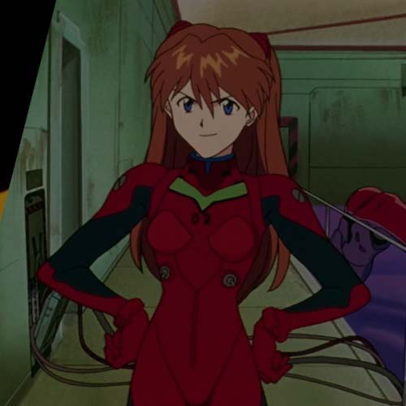
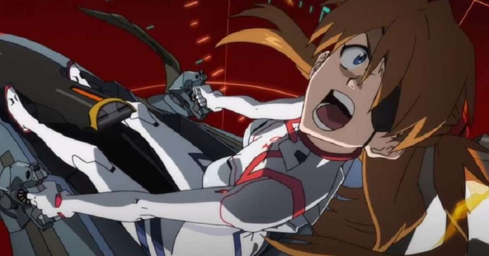
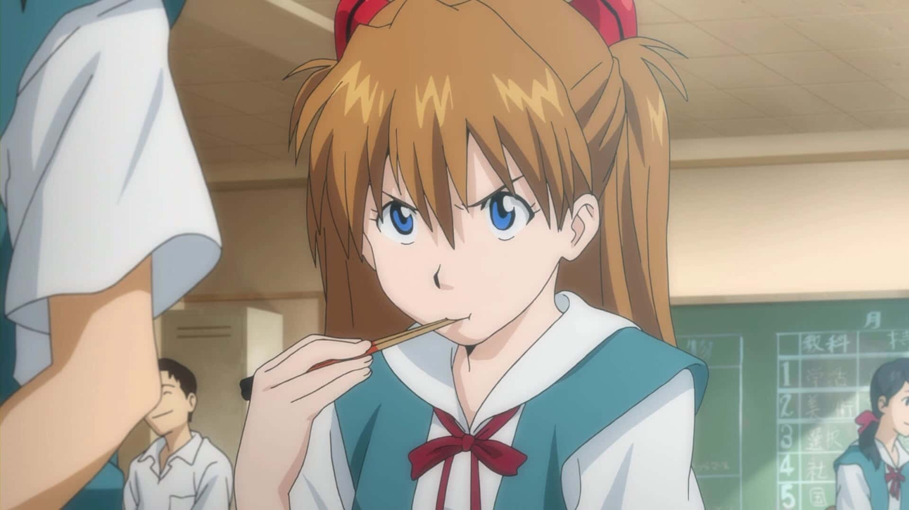

Asuka Langley Soryu
Asuka es una joven inteligente y capaz. No le gusta que le digan qué hacer, y desea que la vean como adulta. Sin embargo, muchas veces es agresiva, presumida y obstinada. Resulta evidente que Asuka tiene dificultades para expresar sus verdaderos sentimientos a los demás.
Su personalidad agresiva es una fachada que protege a una niña muy vulnerable e insegura, siendo esa una faceta que el espectador sólo ve en los sueños de la joven. Es importante resaltar que Asuka busca olvidar su pasado. Los fatídicos eventos de su niñez la marcaron, y por eso intenta olvidarlos. Sin embargo, sueña frecuentemente con dichos eventos.
Por todo lo dicho anteriormente, ella tiene una fuerte necesidad de ser autosuficiente, pero exhibe una gran dificultad para lidiar con su fracaso autopercibido.

Asuka es también muy habladora, extrovertida y carismática, lo que le permitió ser muy popular en el instituto. No tiene vergüenza y hace lo primero que se le pasa por la cabeza, como pedirle un beso a Shinji simplemente porque se aburre. También se caracteriza por tener una actitud provocativa hacia sus compañeros.
Asuka presumiendo su Evangelion.
Su personalidad podría estar marcada como una clase de "refuerzo de la identidad": se jacta constantemente de que su EVA es mejor, que ella es la esperanza de NERV y de que nadie la olvidará o la confundirá por algo que no es, lo cual se interpretaría como su forma de asegurarse de no volver a pasar lo que vivió en su niñez y de justificar su propia existencia. La seiyuu de Asuka, Yuko Miyamura, escribió sus experiencias interpretando a Asuka:
"Quiero hacer saber que Asuka no fue el personaje más abierto de corazón que he conocido... Cada vez que intentaba sincronizarme conmigo misma, Asuka nunca permitiría sincronizarse conmigo. Incluso en el final, Asuka nunca se acercaría a mí. Se hizo la última escena en The End of Evangelion, pero no me pareció que la personalidad de Asuka hubiese avanzado. Un día me plantee que había un muro en su corazón.

Desde su primera aparición, se ve claramente que Asuka está enamorada de Ryoji Kaji. Ella no conoce los detalles de su pasado, pero parece estar enamorada de él debido a su madurez y atractivo físico. Esto está relacionado con su necesidad de ser adulta. Asuka intenta escapar de la niñez, y convertirse en adulta. Por estas razones, Kaji le resulta atractivo, mientras que Shinji le genera cierta aversión. Sin querer hacerlo, Shinji le recuerda las características infantiles e inseguras que ella desea evitar. A pesar de esto, en numerosas ocasiones se ve que Asuka tiene sentimientos ocultos por el joven Ikari.
Ella reprime sus sentimientos hacia Shinji y le anula frente a otras personas. En el episodio 09, Asuka mueve su futón a otra habitación. Luego, se sitúa en la puerta y le dice a Shinji: éste es el impenetrable Muro de Jericó. Si te atreves a invadirlo, te mato. Durante esa escena, Asuka coquetea con Shinji, pero él no se da cuenta.
No está claro si Asuka sólo quiere algo de atención, o si quiere algo más que eso. Lo que sí queda claro, es que ella le lanzó una indirecta, dando a entender que quería que Shinji pase "el Muro". Pero el joven no entendió la indirecta, y se tomó de forma literal las palabras de Asuka: "Si te atreves a invadirlo, te mato". Lo curioso, es que luego Asuka va por sí misma a dormir con Shinji, y no queda claro si caminaba dormida (y se confundió de cama) o tenía otras intenciones.
Por otro lado, su amor por Kaji hace que nazcan en su corazón unos profundos celos hacia Misato Katsuragi, lo cual resulta ser algo negativo, ya que impide que ambas puedan construir lazos de confianza.
Asuka es una joven muy inteligente, y se graduó de la universidad a temprana edad. Además, es una piloto excepcional. Debido a esto, siempre presume y se muestra orgullosa de haber sido seleccionada. Ella posee un alto nivel de sincronización, superando el de Shinji hasta el episodio 16.
En el episodio 17, Toji Suzuhara es seleccionado para ser el Cuarto Niño elegido para pilotar una Unidad Evangelion. Cuando Asuka lo descubre se enfurece mucho al pensar que Toji no es digno.
Asuka sufre una fuerte crisis mental después de ser forzada por el ángel Arael a revivir recuerdos dolorosos de su pasado. Debido a esto ella pierde el deseo de vivir y se vuelve incapaz de pilotar el EVA-02 otra vez hasta The End of Evangelion, en donde lucha contra los EVAS de Producción en Masa. En esa lucha Asuka tenía la batalla casi ganada segundos antes de agotar la energía del EVA-02, pero una unidad enemiga le lanzó una réplica de la lanza de Longinus creada por SEELE. El EVA-02 es aniquilado junto con Asuka (aunque nunca se muestra expresamente la destrucción del Entry Plug); no obstante ella vuelve a aparecer cuando Shinji rechaza el Proyecto de Complementación Humana.
